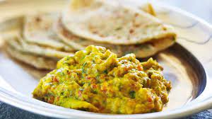

Eggs like you've never eaten before, well maybe. I make my eggs runny and
spicy to keep th nutrients there, texture magnificent, and flavor popping.
- Eggs
- Calabrian Pepper
- Bell Peppers
- Onions
- Salt
- Pepper
- Bread
- Olive Oil
- Heat pan to medium and throw olive oil on pan
- Chop Onions and Bell Peppers into fine pieces
- Turn heat high and throw in minced peppers and onions
- Once they are ever so browning, turn heat to low and crack 4 eggs into pan
- Break yolks and swirl till color is even across pan
- Throw in a spoonful of Calabrian Peppers, a pinch os salt, and dash of pepper
- Toast bread and put spread of your choice
- Keep on low to medium heat, while swirling and evenly cooking eggs
- Once eggs have taken some form, scramble for 2 minutes then turn off pan, keep scrambling for 1 minute after
- Empty eggs onto plate and place bread, voila!